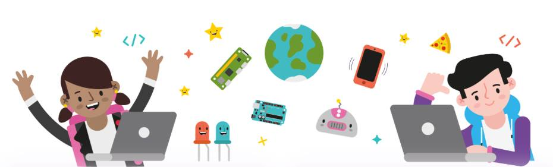

CoderDojo ist eine weltweite Bewegung und davon überzeugt, dass Programmieren eine Fähigkeit ist, die in unserer modernen Welt immer wichtiger wird. Jeden Tag gibt es neue Entwicklungen und Technologie findet Einzug in immer mehr Bereiche unseres Alltags. Wer weiß schon wie die Welt in 10 Jahren aussieht, aber eines ist klar: sie wird mit Code laufen.
Die beiden Vereine stellen ihre Räumlichkeiten am Bahnhofsplatz 10 (direkt am Oldenburger Hauptbahnhof) zur Verfügung, außerdem helfen Mitglieder beider Vereine als Mentoren mit.
Als erfahrener Coder kannst du unseren jungen wissbegierigen Ninjas etwas von deinem Wissen weitergeben.
Bei Interesse einfach Kontakt aufnehmen.